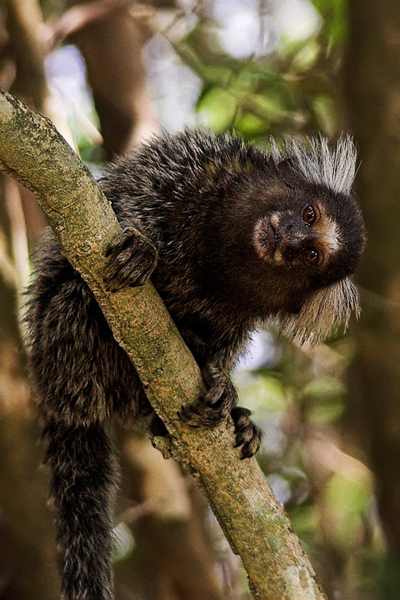

| CompIndel | ||||||||||||||||||||||||||||||||||||||||||||||||||||||
| Home | About | Species | Contact |
Species Information |
| Common Name | Scientific Name | Genome Source | Picture | |
| Human | Homo sapiens | hg19 | ||
| Chimpanzee | Pan troglodytes | panTro2 | ||
| Gorilla | Gorilla gorilla | gorGor1 | ||
| Orangutan | Pongo pygmaeus | ponAbe2 | ||
| Rhesus macaque | Macaca mulatta | rheMac2 | ||
| Baboon | Simia hamadryas | papHam1 | ||
| Marmoset | Callithrix jacchus | calJac1 |  | |
| Tarsier | Carlito syrichta | tarSyr1 | ||
| Mouse lemur | Microcebus myoxinus | micMur1 | ||
| Galago (bushbaby) | Otolemur crassicaudatus | otoGar1 | ||
| Mouse | Mus musculus | mm9 |
© 2014 Jordan Brooker | Contact at jrdnbrkr@gmail.com